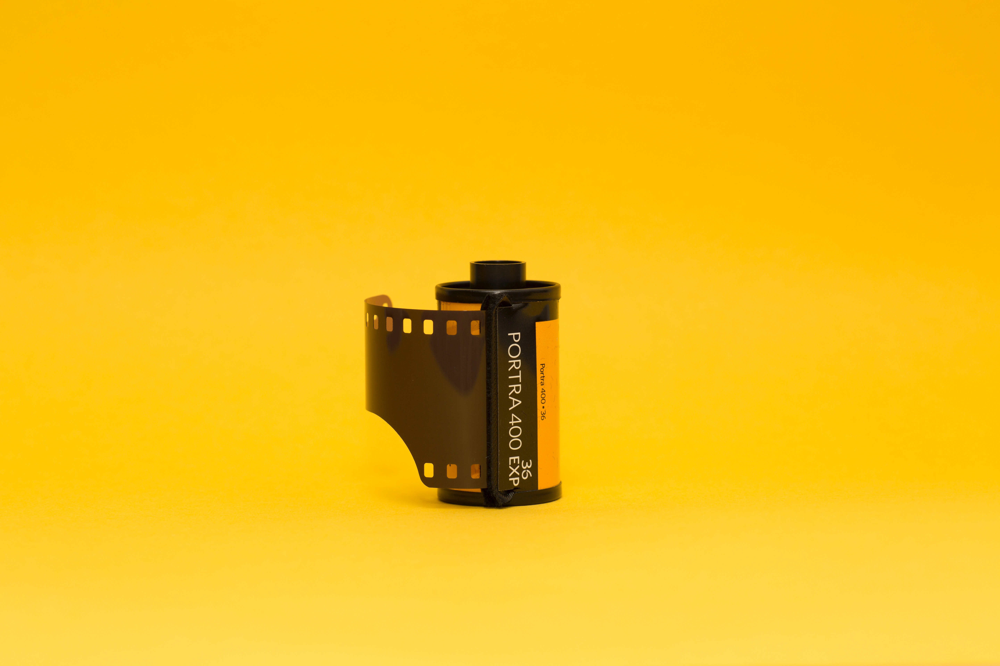
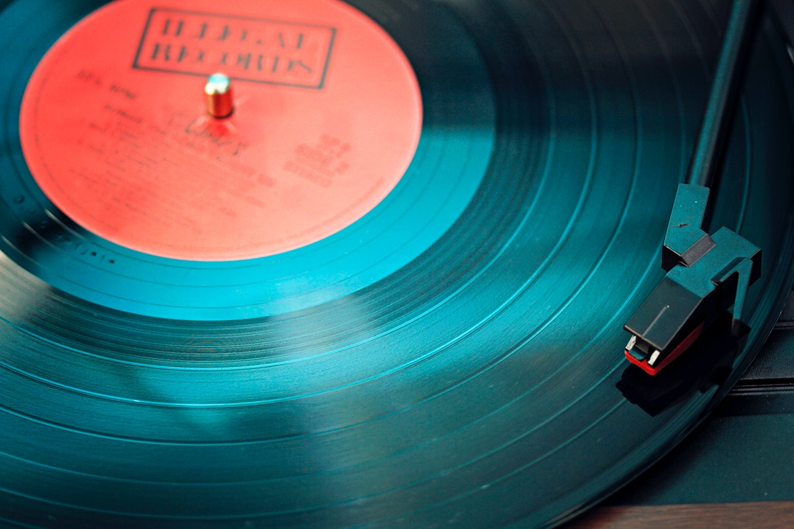
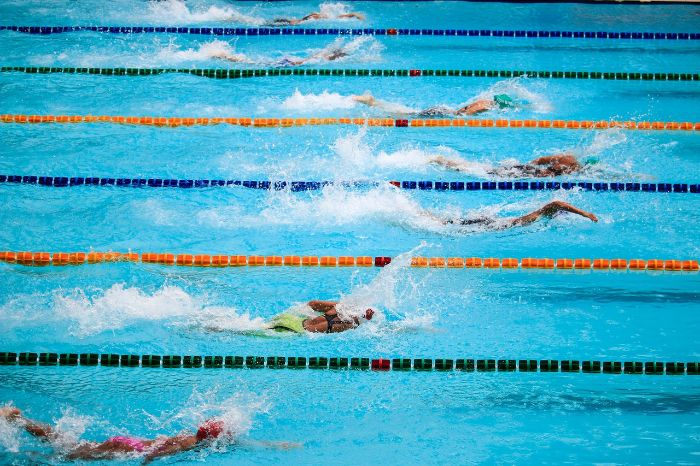
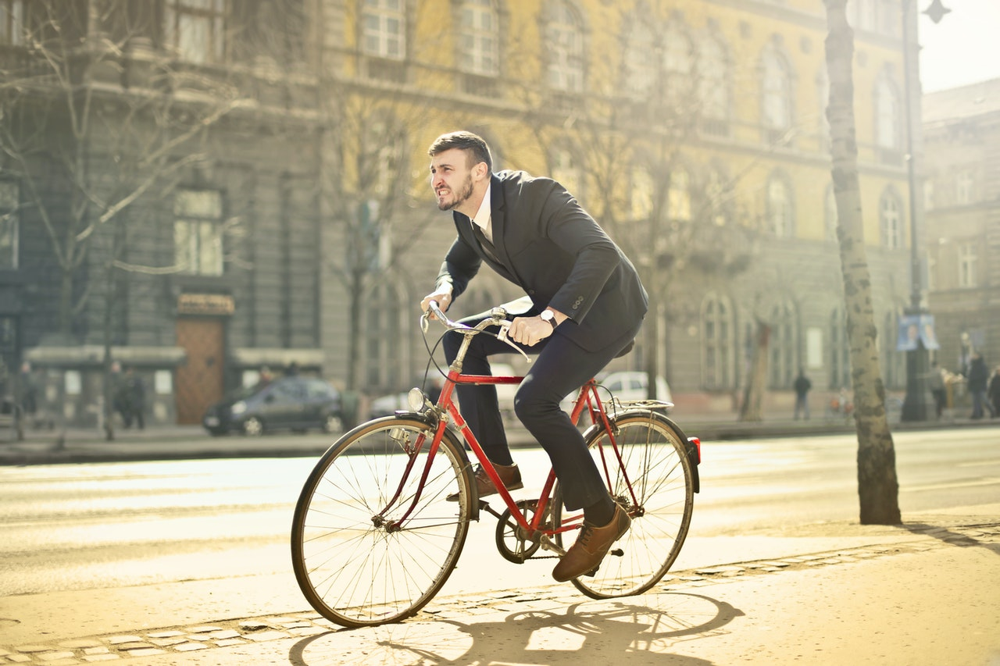
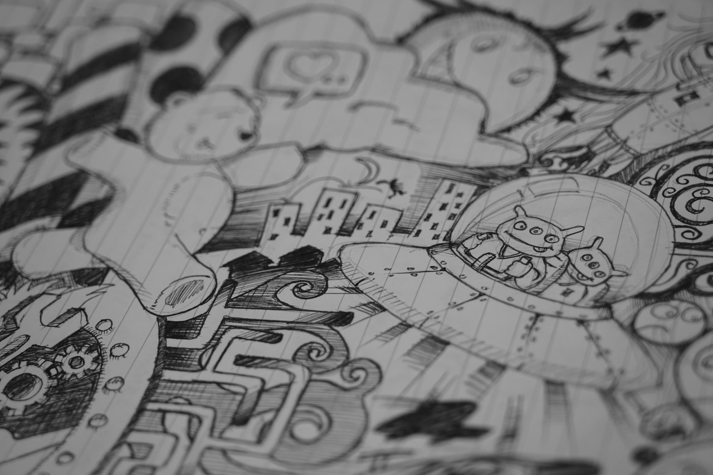

La fotografia, en espacial la que analoga.
Me gusta poder fotografiar mi entorno.
La musica, escuchar y descubrir musica nueva.
Mis generos favoritos son: techno y jazz.
Me gusta mucho practicar natación.
Mas que un deporte, es una terapia.
La pintura y el arte me agradan mucho.
Me gusta pintar o hacer escultura.

Me gusta salir a rodar en bici
ya sea con amigos o con mi familia.
Desde hace unos años colecciono comics.
Me gusta mucho leerlos una y otra vez.
Programar es algo que me gusta aunque
no siempre sea muy bueno en ello.

Me gusta salir a correr por las mañanas.
Es de las mejores formas de empezar el dia.